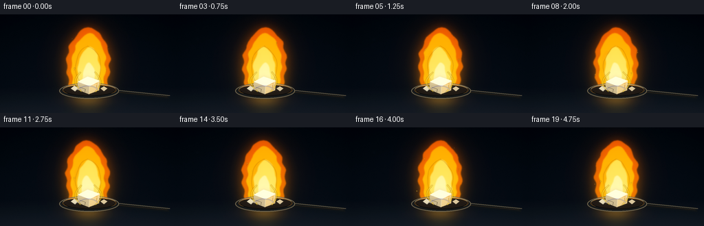
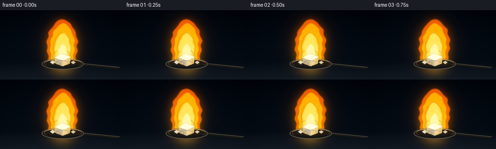

CODING AGENTS AS PIXEL WORLD MODELS
traex/GPT-5.6-Sol · material_0009
点击播放 · 原生 RGB 像素
逐轮保存的候选
回放视频、检查图与代码变化。
每份候选均可单独播放。实际图片检查记录在下方工具轨迹中。
候选 01播放与检查图
点击播放 · 原生 RGB 像素


展开代码变化
--- 上一保存版本
+++ 本次保存版本
@@ -0,0 +1,267 @@
+from pathlib import Path
+import json, math
+import numpy as np
+from PIL import Image, ImageDraw, ImageFilter
+import cv2
+import artifact_io
+
+# Deterministic procedural rendering: no source images or learned assets.
+ROOT = Path(__file__).resolve().parent
+SPEC = json.loads((ROOT / "task_spec.json").read_text())
+W, H = SPEC["width"], SPEC["height"]
+N, FPS = SPEC["frames"], float(SPEC["fps"])
+SS = 3
+RW, RH = W * SS, H * SS
+rng = np.random.default_rng(94217)
+
+
+def sc(v):
+ return int(round(v * SS))
+
+
+def points(seq):
+ return [(sc(x), sc(y)) for x, y in seq]
+
+
+def composite(base, layer):
+ return Image.alpha_composite(base, layer)
+
+
+def radial_light(arr, cx, cy, sx, sy, rgb, strength):
+ yy, xx = np.mgrid[0:RH, 0:RW]
+ g = np.exp(-(((xx-cx*SS)/(sx*SS))**2 + ((yy-cy*SS)/(sy*SS))**2) * 1.6)
+ for c in range(3):
+ arr[..., c] += g * rgb[c] * strength
+
+
+def colored_mask(mask, top, bottom, opacity=1.0):
+ m = np.asarray(mask, np.float32) / 255.0 * opacity
+ y = np.linspace(0, 1, RH, dtype=np.float32)[:, None, None]
+ topa = np.array(top, np.float32)[None, None, :]
+ bota = np.array(bottom, np.float32)[None, None, :]
+ rgb = topa * (1-y) + bota * y
+ rgb = np.broadcast_to(rgb, (RH, RW, 3)).copy()
+ a = (np.clip(m, 0, 1) * 255).astype(np.uint8)
+ return Image.fromarray(np.dstack([np.clip(rgb,0,255).astype(np.uint8), a]), "RGBA")
+
+
+def flame_shape(t, base_x=128, tip_y=20, base_y=111, width=30, base_width=19,
+ phase=0.0, lean=0.0):
+ """A temporally coherent flame silhouette fixed at its base."""
+ ys = np.linspace(tip_y, base_y, 74)
+ left, right = [], []
+ for y in ys:
+ u = (y-tip_y) / (base_y-tip_y)
+ # Tip moves, while the ignition point remains pinned to the salt.
+ drift = (1-u)**1.45 * (2.3*math.sin(1.47*t+phase) + lean)
+ ripple = (1-u) * (0.70*math.sin(0.23*y - 2.35*t + phase)
+ + 0.34*math.sin(0.48*y + 1.23*t + phase*1.7))
+ cx = base_x + drift + ripple
+ hw = width*(max(0.0, math.sin(math.pi*u))**0.58) + base_width*(u**5)
+ hw *= 1 + 0.045*math.sin(0.31*y + 2.1*t + phase)
+ left.append((cx-hw, y))
+ right.append((cx+hw, y))
+ return left + right[::-1]
+
+
+def make_mask(polys, blur=0.0):
+ mask = Image.new("L", (RW, RH), 0)
+ d = ImageDraw.Draw(mask)
+ for poly, fill in polys:
+ d.polygon(points(poly), fill=fill)
+ if blur:
+ mask = mask.filter(ImageFilter.GaussianBlur(sc(blur)))
+ return mask
+
+
+def render_frame(index):
+ t = index / FPS
+ # Cinematic blue-black laboratory backdrop with very fine sensor/air texture.
+ yy, xx = np.mgrid[0:RH, 0:RW]
+ y01, x01 = yy/(RH-1), xx/(RW-1)
+ vignette = np.clip(((x01-.5)/.72)**2 + ((y01-.47)/.88)**2, 0, 1)
+ base = np.zeros((RH, RW, 3), np.float32)
+ base[...,0] = 7 + 5*y01
+ base[...,1] = 11 + 8*y01
+ base[...,2] = 17 + 10*y01
+ base -= vignette[...,None] * np.array([4,5,6], np.float32)
+ # Soft countertop starts near the lower edge.
+ table = np.clip((y01 - .738) / .262, 0, 1)
+ base += table[...,None] * np.array([12,12,12], np.float32)
+ # Fixed fine texture avoids sterile flat computer graphics.
+ noise = rng_for_frame(index).normal(0, 0.9, (RH, RW, 1)).astype(np.float32)
+ base += noise
+
+ # Out-of-focus warm highlights in the distant dark laboratory.
+ bg = Image.fromarray(np.uint8(np.clip(base,0,255)), "RGB").convert("RGBA")
+ bokeh = Image.new("RGBA", (RW,RH), (0,0,0,0))
+ bd = ImageDraw.Draw(bokeh)
+ for bx,by,br,a in [(31,36,4,20),(220,27,3,17),(198,68,2.2,13),(60,77,2.5,10)]:
+ bd.ellipse((sc(bx-br),sc(by-br),sc(bx+br),sc(by+br)), fill=(72,92,105,a))
+ bokeh = bokeh.filter(ImageFilter.GaussianBlur(sc(4)))
+ bg = composite(bg,bokeh)
+
+ # Heat shimmer gently refracts the backdrop above the burning crystal.
+ bg_np = np.asarray(bg.convert("RGB"))
+ map_y, map_x = np.mgrid[0:RH, 0:RW].astype(np.float32)
+ envelope = np.exp(-((map_x-sc(128))/(sc(31)))**2) * np.exp(-((map_y-sc(65))/(sc(52)))**4)
+ map_x += envelope * SS * (0.9*np.sin(map_y/(8.2*SS)-2.2*t) + 0.35*np.sin(map_y/(3.4*SS)+1.3*t))
+ warped = cv2.remap(bg_np, map_x, map_y, interpolation=cv2.INTER_LINEAR, borderMode=cv2.BORDER_REFLECT)
+ bg = Image.fromarray(warped, "RGB").convert("RGBA")
+
+ # Broad, realistic sodium-vapor illumination and a faint table reflection.
+ lit = np.asarray(bg.convert("RGB"), np.float32)
+ radial_light(lit,128,72,47,58,(255,118,5),0.22)
+ radial_light(lit,128,102,27,29,(255,195,27),0.25)
+ radial_light(lit,128,126,34,9,(255,134,4),0.12)
+ bg = Image.fromarray(np.uint8(np.clip(lit,0,255)), "RGB").convert("RGBA")
+
+ # Floor reflection: soft vertical golden smear underneath the spoon.
+ refl = Image.new("RGBA",(RW,RH),(0,0,0,0))
+ rd = ImageDraw.Draw(refl)
+ rd.ellipse((sc(100),sc(119),sc(159),sc(141)), fill=(255,121,5,45))
+ rd.ellipse((sc(114),sc(120),sc(146),sc(143)), fill=(255,206,34,30))
+ refl = refl.filter(ImageFilter.GaussianBlur(sc(10)))
+ bg = composite(bg,refl)
+
+ # Build the steady flame from nested emissive layers.
+ outer_poly = flame_shape(t, tip_y=18.5, width=30.5, base_width=21, phase=.35)
+ left_tongue = flame_shape(t, base_x=116.5, tip_y=43, base_y=109.5, width=13.0,
+ base_width=10, phase=1.7, lean=-3.2)
+ right_tongue = flame_shape(t, base_x=139.5, tip_y=50, base_y=109.5, width=11.5,
+ base_width=9, phase=2.8, lean=3.0)
+ outer = make_mask([(outer_poly,242),(left_tongue,225),(right_tongue,220)], .75)
+ halo = outer.filter(ImageFilter.GaussianBlur(sc(8.0)))
+ bg = composite(bg, colored_mask(halo,(255,74,0),(255,154,4),.43))
+ bg = composite(bg, colored_mask(outer,(255,91,0),(255,143,0),.91))
+
+ main_poly = flame_shape(t+.07, base_x=128, tip_y=27, base_y=111,
+ width=24.0, base_width=16.5, phase=1.0)
+ main_l = flame_shape(t+.03, base_x=118, tip_y=53, base_y=109,
+ width=10.5, base_width=8, phase=2.1, lean=-1)
+ main = make_mask([(main_poly,242),(main_l,220)], .55)
+ bg = composite(bg, colored_mask(main,(255,171,3),(255,213,20),.93))
+
+ # Pale hot center with changing narrow channels; low movement keeps it steady.
+ inner_poly = flame_shape(t+.11, base_x=128.5, tip_y=47, base_y=110,
+ width=15.5, base_width=12.0, phase=2.2)
+ inner = make_mask([(inner_poly,238)], .65)
+ bg = composite(bg, colored_mask(inner,(255,225,65),(255,247,155),.88))
+ core_poly = flame_shape(t+.15, base_x=128, tip_y=70, base_y=109.5,
+ width=8.5, base_width=8.0, phase=.9)
+ core = make_mask([(core_poly,230)], .8)
+ bg = composite(bg, colored_mask(core,(255,241,151),(255,255,224),.82))
+
+ # Hairline orange striations at flame margins add fluid detail.
+ striae = Image.new("RGBA",(RW,RH),(0,0,0,0))
+ sd = ImageDraw.Draw(striae)
+ for side, ph in [(-1,.2),(1,2.1)]:
+ pts=[]
+ for k in range(18):
+ y=46+k*3.2
+ u=(y-46)/58
+ x=128+side*(18*(math.sin(math.pi*u)**.6)+4*u**3)+1.1*math.sin(.20*y-2*t+ph)*(1-u)
+ pts.append((sc(x),sc(y)))
+ sd.line(pts, fill=(255,109,0,92), width=sc(.65))
+ striae=striae.filter(ImageFilter.GaussianBlur(sc(.28)))
+ bg=composite(bg,striae)
+
+ # Combustion spoon: dark polished metal, rim and long handle.
+ metal = Image.new("RGBA",(RW,RH),(0,0,0,0))
+ md = ImageDraw.Draw(metal)
+ # Handle goes away to the right with warm reflected edge.
+ md.line(points([(151,110.5),(246,120)]), fill=(18,22,25,255), width=sc(6.5))
+ md.line(points([(152,108.8),(247,118.3)]), fill=(117,105,83,210), width=sc(1.35))
+ md.line(points([(166,112.5),(243,120.0)]), fill=(246,151,35,80), width=sc(.7))
+ # Bowl/body and inner cavity.
+ md.ellipse((sc(86),sc(100),sc(173),sc(123)), fill=(24,27,28,255), outline=(112,102,79,255), width=sc(1.2))
+ md.ellipse((sc(91),sc(102),sc(169),sc(118.5)), fill=(34,28,23,255), outline=(237,145,37,130), width=sc(.8))
+ md.arc((sc(91),sc(101),sc(169),sc(119)), 188, 345, fill=(216,190,138,170), width=sc(1.0))
+ md.arc((sc(94),sc(104),sc(166),sc(119)), 6, 176, fill=(4,7,9,220), width=sc(1.1))
+ bg=composite(bg,metal)
+
+ # Main sodium-chloride crystal: a readable translucent cuboid with facets.
+ crystal = Image.new("RGBA",(RW,RH),(0,0,0,0))
+ cd = ImageDraw.Draw(crystal)
+ top=[(113.5,98),(127.2,90.8),(145,96.8),(130.1,104.2)]
+ left=[(113.5,98),(130.1,104.2),(129.0,116.2),(112.2,109.8)]
+ right=[(130.1,104.2),(145,96.8),(144,110.6),(129,116.2)]
+ cd.polygon(points(left), fill=(211,192,147,242))
+ cd.polygon(points(right), fill=(243,212,145,246))
+ cd.polygon(points(top), fill=(255,249,218,255))
+ # Crystal inner cleavages and blazing rim lights.
+ cd.line(points([(113.5,98),(130.1,104.2),(145,96.8)]), fill=(255,255,239,245), width=sc(.8))
+ cd.line(points([(130.1,104.2),(129,116.2)]), fill=(255,242,196,230), width=sc(.65))
+ cd.line(points([(116,100),(126,96),(139,99)]), fill=(255,255,245,155), width=sc(.55))
+ cd.line(points([(116,106),(124,109),(123,113)]), fill=(141,118,83,110), width=sc(.55))
+ cd.line(points([(137,102),(141,100),(140,107)]), fill=(255,174,42,185), width=sc(.7))
+ # A few cubic chips ensure the material reads as coarse salt.
+ cd.polygon(points([(103,108),(108,104),(114,107),(109,112)]),fill=(241,229,193,245))
+ cd.polygon(points([(146,108),(151,105),(156,108),(151,112)]),fill=(235,214,168,240))
+ cd.line(points([(103,108),(109,112),(114,107)]),fill=(255,248,220,180),width=sc(.5))
+ # Bloom only on the brightest crystal regions.
+ cbloom = crystal.copy().filter(ImageFilter.GaussianBlur(sc(2.7)))
+ cbloom.putalpha(cbloom.getchannel('A').point(lambda a: int(a*.18)))
+ bg=composite(bg,cbloom)
+ bg=composite(bg,crystal)
+
+ # Flames curl in front of the salt, anchoring combustion to the piece.
+ front = Image.new("RGBA",(RW,RH),(0,0,0,0))
+ fd=ImageDraw.Draw(front)
+ for side,ph in [(-1,.6),(1,2.4)]:
+ curve=[]
+ for k in range(19):
+ u=k/18
+ y=113-u*29
+ x=128+side*(10+9*math.sin(math.pi*u)) + 1.0*math.sin(3.7*u+1.7*t+ph)
+ curve.append((sc(x),sc(y)))
+ fd.line(curve,fill=(255,185,16,190),width=sc(2.0))
+ fd.line(curve,fill=(255,235,91,125),width=sc(.7))
+ # Small blue-violet ignition foot, mostly hidden beneath sodium-yellow emission.
+ fd.arc((sc(113),sc(104),sc(143),sc(121)),198,340,fill=(106,121,255,105),width=sc(1.1))
+ front=front.filter(ImageFilter.GaussianBlur(sc(.45)))
+ bg=composite(bg,front)
+
+ # Sparse coherent sparks, never enough to suggest an explosion.
+ sparks = Image.new("RGBA",(RW,RH),(0,0,0,0))
+ sp=ImageDraw.Draw(sparks)
+ spark_defs=[(-20,79,.1),(24,87,1.2),(-31,94,2.1),(29,66,2.9),(-22,55,3.6),(19,43,4.3)]
+ for j,(dx,y0,ph) in enumerate(spark_defs):
+ life=(t*.42+ph*.17)%1.0
+ # intermittent but frame-coherent ascent
+ if life < .72:
+ x=128+dx+2.8*math.sin(2.2*t+ph)
+ y=y0-life*32
+ a=int(190*(1-life/.72))
+ r=.55 if j%2 else .75
+ sp.ellipse((sc(x-r),sc(y-r),sc(x+r),sc(y+r)),fill=(255,205,54,a))
+ sp.line(points([(x,y+1),(x-.5,y+3.5)]),fill=(255,117,5,a//2),width=sc(.45))
+ sparks=sparks.filter(ImageFilter.GaussianBlur(sc(.35)))
+ bg=composite(bg,sparks)
+
+ # Gentle optical bloom and a crisp master preserve both glow and facets.
+ master=bg.convert("RGB")
+ bloom=master.filter(ImageFilter.GaussianBlur(sc(2.2)))
+ master=Image.blend(master,bloom,.105)
+ master=master.resize((W,H),Image.Resampling.LANCZOS)
+ # Mild contrast/color finish.
+ a=np.asarray(master,np.float32)/255.0
+ a=np.clip((a-.018)*1.045,0,1)
+ a=np.power(a,0.975)
+ return np.uint8(np.clip(a*255,0,255))
+
+
+def rng_for_frame(index):
+ # Same spatial texture drifting imperceptibly rather than independent flicker.
+ return np.random.default_rng(104729 + index)
+
+
+def main():
+ frames=np.stack([render_frame(i) for i in range(N)],axis=0).astype(np.uint8)
+ assert frames.shape==(N,H,W,3) and frames.dtype==np.uint8
+ artifact_io.save(frames, ROOT)
+ print(f"saved {N} RGB frames at {W}x{H}, {FPS:g} fps")
+
+
+if __name__=="__main__":
+ main()
可观测工具轨迹
实际执行的命令与返回图片。
命令 1exit 0
/bin/bash -lc "cat prompt.txt && printf '\\n--- GENERATION_RULES.md ---\\n' && cat GENERATION_RULES.md"
命令 2exit 0
/bin/bash -lc "printf '%s\\n' '--- task_spec.json ---' && cat task_spec.json && printf '%s\\n' '--- files ---' && find . -maxdepth 2 -type f -printf '%p %s bytes\\n' | sort"
命令 3exit 0
/bin/bash -lc "command -v ffmpeg || true; command -v python3 || true; python3 - <<'PY' mods=['numpy','PIL','cv2','imageio','scipy','cairo','moviepy'] for m in mods: try: x=__import__(m) print(m,'OK',getattr(x,'__version__','')) except Exception as e: print(m,'NO',e) PY"
命令 4exit 0
/bin/bash -lc 'cat artifact_io.py'
命令 5exit 0
/bin/bash -lc "cat > generate.py <<'PY'
from pathlib import Path
import json, math
import numpy as np
from PIL import Image, ImageDraw, ImageFilter
import cv2
import artifact_io
# Deterministic procedural rendering: no source images or learned assets.
ROOT = Path(__file__).resolve().parent
SPEC = json.loads((ROOT / \"task_spec.json\").read_text())
W, H = SPEC[\"width\"], SPEC[\"height\"]
N, FPS = SPEC[\"frames\"], float(SPEC[\"fps\"])
SS = 3
RW, RH = W * SS, H * SS
rng = np.random.default_rng(94217)
def sc(v):
return int(round(v * SS))
def points(seq):
return [(sc(x), sc(y)) for x, y in seq]
def composite(base, layer):
return Image.alpha_composite(base, layer)
def radial_light(arr, cx, cy, sx, sy, rgb, strength):
yy, xx = np.mgrid[0:RH, 0:RW]
g = np.exp(-(((xx-cx*SS)/(sx*SS))**2 + ((yy-cy*SS)/(sy*SS))**2) * 1.6)
for c in range(3):
arr[..., c] += g * rgb[c] * strength
def colored_mask(mask, top, bottom, opacity=1.0):
m = np.asarray(mask, np.float32) / 255.0 * opacity
y = np.linspace(0, 1, RH, dtype=np.float32)[:, None, None]
topa = np.array(top, np.float32)[None, None, :]
bota = np.array(bottom, np.float32)[None, None, :]
rgb = topa * (1-y) + bota * y
rgb = np.broadcast_to(rgb, (RH, RW, 3)).copy()
a = (np.clip(m, 0, 1) * 255).astype(np.uint8)
return Image.fromarray(np.dstack([np.clip(rgb,0,255).astype(np.uint8), a]), \"RGBA\")
def flame_shape(t, base_x=128, tip_y=20, base_y=111, width=30, base_width=19,
phase=0.0, lean=0.0):
\"\"\"A temporally coherent flame silhouette fixed at its base.\"\"\"
ys = np.linspace(tip_y, base_y, 74)
left, right = [], []
for y in ys:
u = (y-tip_y) / (base_y-tip_y)
# Tip moves, while the ignition point remains pinned to the salt.
drift = (1-u)**1.45 * (2.3*math.sin(1.47*t+phase) + lean)
ripple = (1-u) * (0.70*math.sin(0.23*y - 2.35*t + phase)
+ 0.34*math.sin(0.48*y + 1.23*t + phase*1.7))
cx = base_x + drift + ripple
hw = width*(max(0.0, math.sin(math.pi*u))**0.58) + base_width*(u**5)
hw *= 1 + 0.045*math.sin(0.31*y + 2.1*t + phase)
left.append((cx-hw, y))
right.append((cx+hw, y))
return left + right[::-1]
def make_mask(polys, blur=0.0):
mask = Image.new(\"L\", (RW, RH), 0)
d = ImageDraw.Draw(mask)
for poly, fill in polys:
d.polygon(points(poly), fill=fill)
if blur:
mask = mask.filter(ImageFilter.GaussianBlur(sc(blur)))
return mask
def render_frame(index):
t = index / FPS
# Cinematic blue-black laboratory backdrop with very fine sensor/air texture.
yy, xx = np.mgrid[0:RH, 0:RW]
y01, x01 = yy/(RH-1), xx/(RW-1)
vignette = np.clip(((x01-.5)/.72)**2 + ((y01-.47)/.88)**2, 0, 1)
base = np.zeros((RH, RW, 3), np.float32)
base[...,0] = 7 + 5*y01
base[...,1] = 11 + 8*y01
base[...,2] = 17 + 10*y01
base -= vignette[...,None] * np.array([4,5,6], np.float32)
# Soft countertop starts near the lower edge.
table = np.clip((y01 - .738) / .262, 0, 1)
base += table[...,None] * np.array([12,12,12], np.float32)
# Fixed fine texture avoids sterile flat computer graphics.
noise = rng_for_frame(index).normal(0, 0.9, (RH, RW, 1)).astype(np.float32)
base += noise
# Out-of-focus warm highlights in the distant dark laboratory.
bg = Image.fromarray(np.uint8(np.clip(base,0,255)), \"RGB\").convert(\"RGBA\")
bokeh = Image.new(\"RGBA\", (RW,RH), (0,0,0,0))
bd = ImageDraw.Draw(bokeh)
for bx,by,br,a in [(31,36,4,20),(220,27,3,17),(198,68,2.2,13),(60,77,2.5,10)]:
bd.ellipse((sc(bx-br),sc(by-br),sc(bx+br),sc(by+br)), fill=(72,92,105,a))
bokeh = bokeh.filter(ImageFilter.GaussianBlur(sc(4)))
bg = composite(bg,bokeh)
# Heat shimmer gently refracts the backdrop above the burning crystal.
bg_np = np.asarray(bg.convert(\"RGB\"))
map_y, map_x = np.mgrid[0:RH, 0:RW].astype(np.float32)
envelope = np.exp(-((map_x-sc(128))/(sc(31)))**2) * np.exp(-((map_y-sc(65))/(sc(52)))**4)
map_x += envelope * SS * (0.9*np.sin(map_y/(8.2*SS)-2.2*t) + 0.35*np.sin(map_y/(3.4*SS)+1.3*t))
warped = cv2.remap(bg_np, map_x, map_y, interpolation=cv2.INTER_LINEAR, borderMode=cv2.BORDER_REFLECT)
bg = Image.fromarray(warped, \"RGB\").convert(\"RGBA\")
# Broad, realistic sodium-vapor illumination and a faint table reflection.
lit = np.asarray(bg.convert(\"RGB\"), np.float32)
radial_light(lit,128,72,47,58,(255,118,5),0.22)
radial_light(lit,128,102,27,29,(255,195,27),0.25)
radial_light(lit,128,126,34,9,(255,134,4),0.12)
bg = Image.fromarray(np.uint8(np.clip(lit,0,255)), \"RGB\").convert(\"RGBA\")
# Floor reflection: soft vertical golden smear underneath the spoon.
refl = Image.new(\"RGBA\",(RW,RH),(0,0,0,0))
rd = ImageDraw.Draw(refl)
rd.ellipse((sc(100),sc(119),sc(159),sc(141)), fill=(255,121,5,45))
rd.ellipse((sc(114),sc(120),sc(146),sc(143)), fill=(255,206,34,30))
refl = refl.filter(ImageFilter.GaussianBlur(sc(10)))
bg = composite(bg,refl)
# Build the steady flame from nested emissive layers.
outer_poly = flame_shape(t, tip_y=18.5, width=30.5, base_width=21, phase=.35)
left_tongue = flame_shape(t, base_x=116.5, tip_y=43, base_y=109.5, width=13.0,
base_width=10, phase=1.7, lean=-3.2)
right_tongue = flame_shape(t, base_x=139.5, tip_y=50, base_y=109.5, width=11.5,
base_width=9, phase=2.8, lean=3.0)
outer = make_mask([(outer_poly,242),(left_tongue,225),(right_tongue,220)], .75)
halo = outer.filter(ImageFilter.GaussianBlur(sc(8.0)))
bg = composite(bg, colored_mask(halo,(255,74,0),(255,154,4),.43))
bg = composite(bg, colored_mask(outer,(255,91,0),(255,143,0),.91))
main_poly = flame_shape(t+.07, base_x=128, tip_y=27, base_y=111,
width=24.0, base_width=16.5, phase=1.0)
main_l = flame_shape(t+.03, base_x=118, tip_y=53, base_y=109,
width=10.5, base_width=8, phase=2.1, lean=-1)
main = make_mask([(main_poly,242),(main_l,220)], .55)
bg = composite(bg, colored_mask(main,(255,171,3),(255,213,20),.93))
# Pale hot center with changing narrow channels; low movement keeps it steady.
inner_poly = flame_shape(t+.11, base_x=128.5, tip_y=47, base_y=110,
width=15.5, base_width=12.0, phase=2.2)
inner = make_mask([(inner_poly,238)], .65)
bg = composite(bg, colored_mask(inner,(255,225,65),(255,247,155),.88))
core_poly = flame_shape(t+.15, base_x=128, tip_y=70, base_y=109.5,
width=8.5, base_width=8.0, phase=.9)
core = make_mask([(core_poly,230)], .8)
bg = composite(bg, colored_mask(core,(255,241,151),(255,255,224),.82))
# Hairline orange striations at flame margins add fluid detail.
striae = Image.new(\"RGBA\",(RW,RH),(0,0,0,0))
sd = ImageDraw.Draw(striae)
for side, ph in [(-1,.2),(1,2.1)]:
pts=[]
for k in range(18):
y=46+k*3.2
u=(y-46)/58
x=128+side*(18*(math.sin(math.pi*u)**.6)+4*u**3)+1.1*math.sin(.20*y-2*t+ph)*(1-u)
pts.append((sc(x),sc(y)))
sd.line(pts, fill=(255,109,0,92), width=sc(.65))
striae=striae.filter(ImageFilter.GaussianBlur(sc(.28)))
bg=composite(bg,striae)
# Combustion spoon: dark polished metal, rim and long handle.
metal = Image.new(\"RGBA\",(RW,RH),(0,0,0,0))
md = ImageDraw.Draw(metal)
# Handle goes away to the right with warm reflected edge.
md.line(points([(151,110.5),(246,120)]), fill=(18,22,25,255), width=sc(6.5))
md.line(points([(152,108.8),(247,118.3)]), fill=(117,105,83,210), width=sc(1.35))
md.line(points([(166,112.5),(243,120.0)]), fill=(246,151,35,80), width=sc(.7))
# Bowl/body and inner cavity.
md.ellipse((sc(86),sc(100),sc(173),sc(123)), fill=(24,27,28,255), outline=(112,102,79,255), width=sc(1.2))
md.ellipse((sc(91),sc(102),sc(169),sc(118.5)), fill=(34,28,23,255), outline=(237,145,37,130), width=sc(.8))
md.arc((sc(91),sc(101),sc(169),sc(119)), 188, 345, fill=(216,190,138,170), width=sc(1.0))
md.arc((sc(94),sc(104),sc(166),sc(119)), 6, 176, fill=(4,7,9,220), width=sc(1.1))
bg=composite(bg,metal)
# Main sodium-chloride crystal: a readable translucent cuboid with facets.
crystal = Image.new(\"RGBA\",(RW,RH),(0,0,0,0))
cd = ImageDraw.Draw(crystal)
top=[(113.5,98),(127.2,90.8),(145,96.8),(130.1,104.2)]
left=[(113.5,98),(130.1,104.2),(129.0,116.2),(112.2,109.8)]
right=[(130.1,104.2),(145,96.8),(144,110.6),(129,116.2)]
cd.polygon(points(left), fill=(211,192,147,242))
cd.polygon(points(right), fill=(243,212,145,246))
cd.polygon(points(top), fill=(255,249,218,255))
# Crystal inner cleavages and blazing rim lights.
cd.line(points([(113.5,98),(130.1,104.2),(145,96.8)]), fill=(255,255,239,245), width=sc(.8))
cd.line(points([(130.1,104.2),(129,116.2)]), fill=(255,242,196,230), width=sc(.65))
cd.line(points([(116,100),(126,96),(139,99)]), fill=(255,255,245,155), width=sc(.55))
cd.line(points([(116,106),(124,109),(123,113)]), fill=(141,118,83,110), width=sc(.55))
cd.line(points([(137,102),(141,100),(140,107)]), fill=(255,174,42,185), width=sc(.7))
# A few cubic chips ensure the material reads as coarse salt.
cd.polygon(points([(103,108),(108,104),(114,107),(109,112)]),fill=(241,229,193,245))
cd.polygon(points([(146,108),(151,105),(156,108),(151,112)]),fill=(235,214,168,240))
cd.line(points([(103,108),(109,112),(114,107)]),fill=(255,248,220,180),width=sc(.5))
# Bloom only on the brightest crystal regions.
cbloom = crystal.copy().filter(ImageFilter.GaussianBlur(sc(2.7)))
cbloom.putalpha(cbloom.getchannel('A').point(lambda a: int(a*.18)))
bg=composite(bg,cbloom)
bg=composite(bg,crystal)
# Flames curl in front of the salt, anchoring combustion to the piece.
front = Image.new(\"RGBA\",(RW,RH),(0,0,0,0))
fd=ImageDraw.Draw(front)
for side,ph in [(-1,.6),(1,2.4)]:
curve=[]
for k in range(19):
u=k/18
y=113-u*29
x=128+side*(10+9*math.sin(math.pi*u)) + 1.0*math.sin(3.7*u+1.7*t+ph)
curve.append((sc(x),sc(y)))
fd.line(curve,fill=(255,185,16,190),width=sc(2.0))
fd.line(curve,fill=(255,235,91,125),width=sc(.7))
# Small blue-violet ignition foot, mostly hidden beneath sodium-yellow emission.
fd.arc((sc(113),sc(104),sc(143),sc(121)),198,340,fill=(106,121,255,105),width=sc(1.1))
front=front.filter(ImageFilter.GaussianBlur(sc(.45)))
bg=composite(bg,front)
# Sparse coherent sparks, never enough to suggest an explosion.
sparks = Image.new(\"RGBA\",(RW,RH),(0,0,0,0))
sp=ImageDraw.Draw(sparks)
spark_defs=[(-20,79,.1),(24,87,1.2),(-31,94,2.1),(29,66,2.9),(-22,55,3.6),(19,43,4.3)]
for j,(dx,y0,ph) in enumerate(spark_defs):
life=(t*.42+ph*.17)%1.0
# intermittent but frame-coherent ascent
if life < .72:
x=128+dx+2.8*math.sin(2.2*t+ph)
y=y0-life*32
a=int(190*(1-life/.72))
r=.55 if j%2 else .75
sp.ellipse((sc(x-r),sc(y-r),sc(x+r),sc(y+r)),fill=(255,205,54,a))
sp.line(points([(x,y+1),(x-.5,y+3.5)]),fill=(255,117,5,a//2),width=sc(.45))
sparks=sparks.filter(ImageFilter.GaussianBlur(sc(.35)))
bg=composite(bg,sparks)
# Gentle optical bloom and a crisp master preserve both glow and facets.
master=bg.convert(\"RGB\")
bloom=master.filter(ImageFilter.GaussianBlur(sc(2.2)))
master=Image.blend(master,bloom,.105)
master=master.resize((W,H),Image.Resampling.LANCZOS)
# Mild contrast/color finish.
a=np.asarray(master,np.float32)/255.0
a=np.clip((a-.018)*1.045,0,1)
a=np.power(a,0.975)
return np.uint8(np.clip(a*255,0,255))
def rng_for_frame(index):
# Same spatial texture drifting imperceptibly rather than independent flicker.
return np.random.default_rng(104729 + index)
def main():
frames=np.stack([render_frame(i) for i in range(N)],axis=0).astype(np.uint8)
assert frames.shape==(N,H,W,3) and frames.dtype==np.uint8
artifact_io.save(frames, ROOT)
print(f\"saved {N} RGB frames at {W}x{H}, {FPS:g} fps\")
if __name__==\"__main__\":
main()
PY
python3 generate.py
ls -lh pixels.npz inspection.png transition_check.png index.html frames/00.png frames/19.png"命令 6exit 0
/bin/bash -lc "python3 - <<'PY'
import numpy as np, json
from PIL import Image
z=np.load('pixels.npz')['pixels']
print('packed shape/dtype',z.shape,z.dtype)
f=np.stack([np.asarray(Image.open(f'frames/{i:02d}.png')) for i in range(20)])
print('frames',f.shape,f.dtype,'range',int(f.min()),int(f.max()))
print('mean RGB',np.round(f.mean((0,1,2)),2))
print('center/flame mean RGB',np.round(f[:,15:113,95:162].mean((0,1,2)),2))
# sodium-yellow pixels and bright flame coverage
sod=(f[...,0]>180)&(f[...,1]>70)&(f[...,1]<250)&(f[...,2]<95)
hot=(f[...,0]>220)&(f[...,1]>180)&(f[...,2]<150)
print('sodium-yellow px/frame',np.round(sod.sum((1,2)),0).astype(int))
print('hot core px/frame',np.round(hot.sum((1,2)),0).astype(int))
mad=np.abs(np.diff(f.astype(np.int16),axis=0)).mean((1,2,3))
print('frame MAD',np.round(mad,3),'mean',mad.mean())
# stable lower object and dynamic upper flame
for name,crop in [('upper flame',(slice(None),slice(15,95),slice(95,162))),('crystal',(slice(None),slice(90,121),slice(98,159))),('background',(slice(None),slice(0,144),slice(0,70)))]:
x=f[crop]
print(name,'temporal std',x.std(0).mean(),'successive MAD',np.abs(np.diff(x.astype(np.int16),axis=0)).mean())
# verify packed tensor reconstructs exact RGB
p=((f[...,0].astype(np.uint32)<<16)|(f[...,1].astype(np.uint32)<<8)|f[...,2].astype(np.uint32)).transpose(1,2,0)
print('npz exact:',np.array_equal(z,p))
PY"命令 7exit 0
/bin/bash -lc "python3 -m py_compile generate.py artifact_io.py && python3 - <<'PY'
from PIL import Image
from pathlib import Path
for p in ['inspection.png','transition_check.png']+[f'frames/{i:02d}.png' for i in range(20)]:
im=Image.open(p); im.verify()
print('all PNGs verified')
print('frame sizes', sorted({Image.open(f'frames/{i:02d}.png').size for i in range(20)}))
print('frame modes', sorted({Image.open(f'frames/{i:02d}.png').mode for i in range(20)}))
PY"命令 8exit 0
/bin/bash -lc "git status --short 2>/dev/null || true; find frames -maxdepth 1 -name '*.png' | wc -l; du -sh ."
保存候选 1 份；完成命令 8 次；可验证图片返回 0 张。原始 API 响应与完整日志保留在本地。